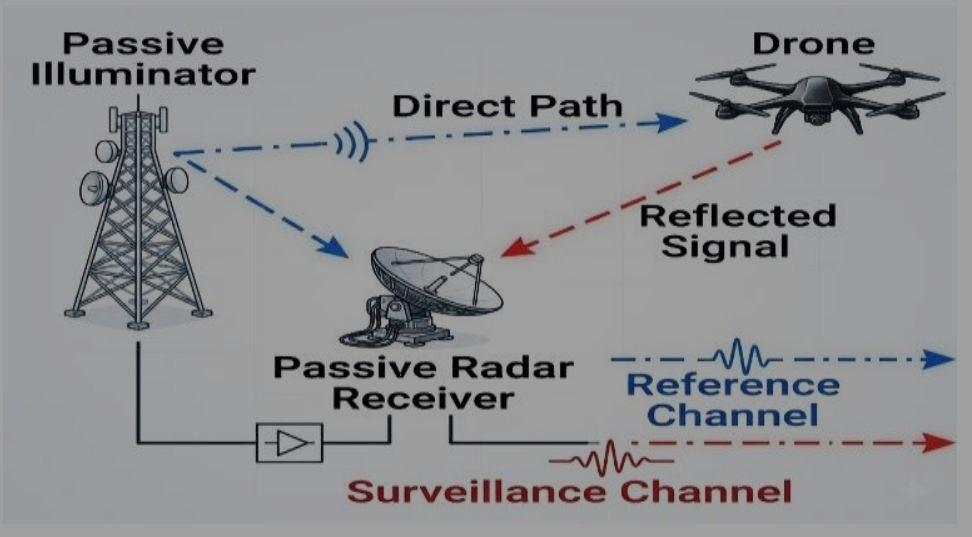
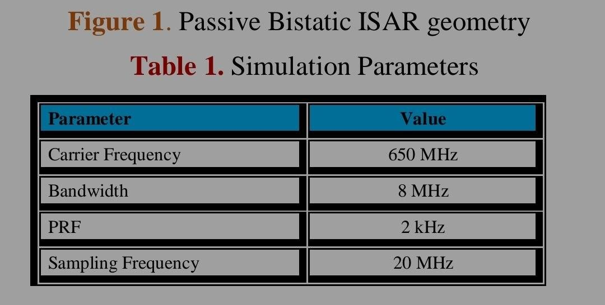
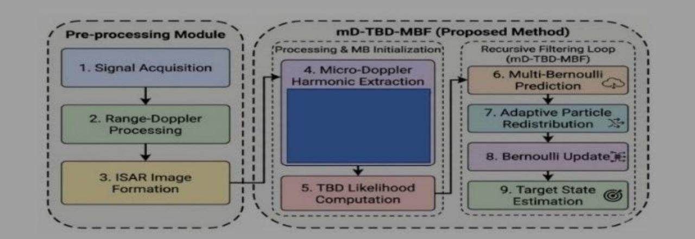

11th International Conference on Advanced Technology and Applied Sciences (ICaTAS 2026)
Theme: Advancing Engineering, Science and Technology for a Resilient and Sustainable Future 7–9 October 2026, Kuala Lumpur
RESEARCH ARTICLE
Enhanced Passive ISAR Drone Surveillance Using Micro-Doppler-Assisted Multi-Bernoulli TBD Filtering
NAME:
[الاسم هنا]
ID:
[الـ ID هنا]
² Department of Electronics and Communication, Arab Academy for Science Technology and Maritime Transport, Cairo, Egypt
ABSTRACT –
Passive Inverse Synthetic Aperture Radar (ISAR) systems provide an effective solution for covert drone surveillance in cluttered environments. However, tracking drones inside Doppler-blind zones (DBZs) remains challenging because target Doppler signatures overlap with stationary clutter under
low signal-to-noise ratio (SNR) conditions. This paper proposes a Micro-Doppler-Assisted Track-Before-Detect Multi-Bernoulli Filter (mD-TBD-MBF) for passive ISAR drone tracking in DBZ environments. The proposed framework combines micro-Doppler harmonic extraction, TBD processing, and MB Random Finite Set filtering to improve weak target detection and tracking continuity.
An adaptive harmonic-guided particle redistribution mechanism is introduced to enhance clutter robustness and preserve target observability during Doppler-blind-zone crossings. Simulation results demonstrate improved detection probability,
reduced false alarms, and enhanced trajectory estimation accuracy compared with conventional tracking filters.
ARTICLE HISTORY
Received: #
Revised: #
Accepted: #
Published: #
KEYWORDS
Passive ISAR radar
Track-Before-Detect
micro- Doppler
MB filter
UAV tracking
Doppler-blind zone
1. INTRODUCTION
The rapid proliferation of small unmanned aerial vehicles (UAVs) has created major challenges for modern radar surveillance systems. Commercial and military drones are increasingly being used in applications such as aerial photography, environmental monitoring, cargo transportation, precision agriculture, border patrol, and tactical reconnaissance [1].
Despite their operational benefits, the widespread accessibility of UAV platforms has also introduced

3.1 ISAR-TBD Observation Model
Despite their operational benefits, the widespread accessibility of UAV platforms has also introduced
fD = (1 ⁄ λ) (d ⁄ dt) (Rt + Rr)
(1)
sMD(t) = Σi=1Nb Ai cos(2π fr,i t + φi)
(2)

